如果你在百度上搜索词条“巴克球”，它会告诉你两个答案：一是化学上碳60（C60）的俗称，也称为富勒烯；二是一种由带有磁性的金属实心圆球组成的益智玩具。
巴克球材料为由钕铁硼（NdFeB）磁矿石精细加工而成的球状强磁石，具有强磁特性，能组合出数亿种几何图案，有极高的娱乐性和创造性。大家可以通过发挥才智，创造出属于自己的作品。此外，它外观精致，光泽亮丽，不易褪色，既可以充当玩具，又可以作为饰品。[此书分享V信wsyy 5437]
《最强大脑》第五季第一场国际赛中把巴克球作为一个挑战项目。在这项挑战中，由多个磁力球结合而成的巴克球模型，通过纷繁复杂的排列方式，呈现出绚烂多姿的样貌。选手需要通过观察，在脑海中把这些模型拆解成不同的单元，然后计算出模型所用的巴克球数量。
在这场挑战中，80个巴克球模型让所有嘉宾都忍不住感叹造物的神奇，有的嘉宾表示像是观看珠宝展。这些绝美的模型中暗藏玄机，模型中共点、共边、共面的情况会增加计算的难度，不少弧面结构还需要选手在脑海中把它展开成平面结构以方便计算——这对选手的空间想象力和计算能力，都是极大的挑战。
本文并非针对某一具体的巴克球模型介绍其计算方法，而是把巴克球作为道具，介绍两个著名的数学难题。
法国数学家卢卡斯早在1875年便向《新数学年鉴》提出如下问题。
用球（例如巴克球）堆成正九棱锥（如图9-1所示，各层球数分别为1,4,9,16,…），整个锥体所堆球数能不能是完全平方数？换言之，方程12+22+32+42+…+n2=m2（m，n均是整数）有无解？
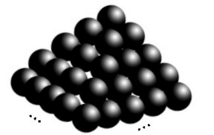
图9-1
卢卡斯此时已有相当大的名气，他在提出该问题时，竟武断地认为此方程无解。但次年，勃兰克便给出一组解：
n=24，m=70
解的唯一性问题直到1918年才由瓦特松利用椭圆函数给出了一个严格的证明，从而否定了当初卢卡斯的断言。老虎也有打盹的时候，在数学中大师也会犯错误，这也正常。但提醒大家：千万不能凭借不完全的归纳或直觉，妄下断言。
由12+22+32+…+232+242=702，我们不由想到完全正方形问题，从上式可以看出边长分别为1～24的正方形的面积的和恰好与一个边长为70的正方形的面积相等。我们也许会想这样一个问题：边长为70的正方形，可否恰好分割成边长为1,2,…,23,24的小正方形？答案是否定的。迄今为止，最好的答案是大正方形分割为24个小正方形（其中边长为1的正方形有2个，边长为7的正方形却没有，如图9-2所示），仅剩下总面积为48的6个小条，人们称其为“拟完美正方形”。
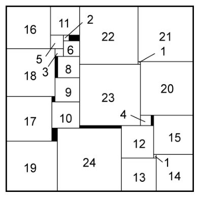
图9-2
1694年，英国牛津的天文学家格雷戈里与他的朋友——大名鼎鼎的牛顿讨论一个问题：一个单位球能否与13个（互不相交的）单位球相切？就像一个巴克球能否在其表面吸附13个巴克球，牛顿认为不可能，而格雷戈里则猜测一个单位球能够与13个单位球相切。
如图9-3所示，当单位球A与单位球O相切时，点O与球A的切线形成一个圆锥。这个圆锥含有球面A的一个球冠，切点A1就是球冠的极（顶点）。点A1与该球冠上任一点的球面距离
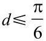
，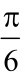
即为这个球冠的半径。同样，对另一个与圆O相切的单位球B，也有一个以切点B1为极、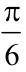
为半径的球冠。于是，格雷戈里的猜测等价于下面的问题：球面上能否有13个半径为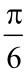
的球冠，且它们互不重叠？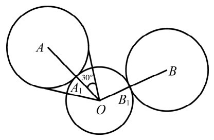
图9-3
由于
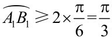
，所以A1B1≥OA1=1，即每两个切点之间的（直线）距离d≥1。格雷戈里猜测还可以再换一个等价的说法：单位球面上能否有13个点满足每两个点之间的直线距离d≥1？在平面上，问题就简单多了，二维的“球”就是圆。设⊙(O,1)是圆心为O、半径为1的圆，至多有多少个互不重叠的单位圆与⊙(O,1)相切？图9-4表明可以有6个互不重叠的单位圆与⊙(O,1)相切，它们的圆心组成一个边长为2的正六边形［正好是⊙(O,2)的内接正六边形］。这6个圆“挤”得很紧，第7个圆显然没有立锥之地。但是直观上的显然，不能代替严谨的证明，怎样证明与⊙(O，1)相切的圆至多有6个呢？
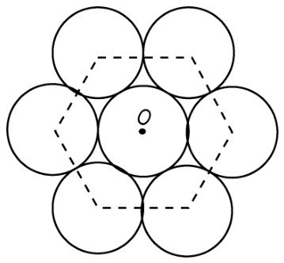
图9-4
证明并不困难。如图9-5所示，在⊙(A,1)和⊙(B,1)互不重叠而且均与⊙(O,1)相切时，AB≥1+1=2，OA=OB=1+1=2。所以在△AOB中，边AB最大，从而∠AOB≥60°。因为点O处的周角是360°，所以像⊙(A,1),⊙(B,1),…这样互不重叠且均与⊙(O,1)相切的圆至多有6(=360°÷60°)个。
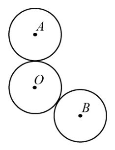
图9-5
空间的情形复杂得多。不难举例说明，可以有12个单位球与同一个单位球相切。最简单的例子是将单位球一层一层地堆起来，最上面1个，第2层4个，第3层9个，第4层16个。那么，在第3层核心的那个球既与上一层的4个球相切，又与下一层的4个球相切，还与同一层的4个球相切。
另一个很自然的例子就是球的内接正二十面体。它有12个顶点，20个面，每个面均为正三角形。不难算出这个正二十面体的每条棱长为
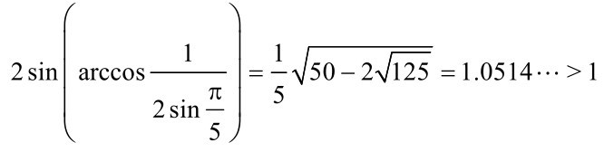
即12个顶点两两间的距离大于1，这12个顶点可以作为12个单位球与球O的切点。
另一方面，我们可以证明与单位球O相切又互不重叠的单位球不超过14个，也就是在球面O上两两距离不小于1的点的个数不超过14个。为此，考虑半径为
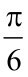
的球冠（如图9-6所示），球冠的高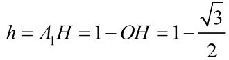
所以，球冠的面积
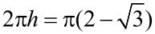
。因为球面积为4π，所以互不重叠、半径为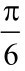
的球冠的个数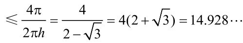
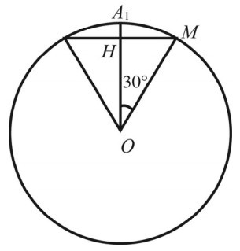
图9-6
因此，15个半径为
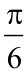
的球冠必有重叠。换句话说，互不重叠且半径为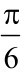
的球冠个数不超过14。虽然大多数人倾向于牛顿的观点，认为至多有12个单位球同时与一个单位球相切，但严格的证明姗姗来迟，直至1953年（将近260年之后）才由许特与著名代数学家范德瓦尔登给出证明。1956年，加拿大的利奇给出了一个较为简单的证明，这一证明需要掌握一些球面几何知识，有兴趣的读者可参阅文献【7】。